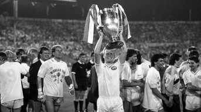

Le PSV Eindhoven, ou Philips Sport Vereniging, est un club de football néerlandais fondé en 1913 à Eindhoven. Initialement créé pour les employés de la société Philips, le club est rapidement devenu l'un des plus grands noms du football néerlandais et européen. Le PSV a remporté de nombreux titres nationaux, dont plus de 20 championnats des Pays-Bas et plusieurs Coupes KNVB. Sur la scène européenne, le club a connu son apogée en 1988 en remportant la Coupe des clubs champions européens (aujourd'hui Ligue des champions de l'UEFA) en battant le S.L. Benfica en finale. Le PSV est également réputé pour son académie de jeunes talents, ayant formé des joueurs de renommée mondiale tels que Ruud Gullit, Romário, et Arjen Robben.
Le centre en chiffre :
Oirschotsedijk 12, 5651 GC Eindhoven, Pays-Bas
Le Philips Stadion est le stade de football emblématique du PSV Eindhoven, situé dans la ville d'Eindhoven aux Pays-Bas. Inauguré en 1913, le stade a une capacité actuelle d'environ 35 000 places, ce qui en fait l'un des plus grands stades du pays. Le Philips Stadion est réputé pour son atmosphère vibrante et passionnée lors des matchs du PSV, avec des supporters fervents qui créent une ambiance unique. Le stade a également accueilli de nombreux événements internationaux, y compris des matchs de l'UEFA Champions League et des rencontres de l'équipe nationale néerlandaise. En plus de son importance sportive, le Philips Stadion est un symbole culturel pour la ville d'Eindhoven, reflétant l'histoire et la tradition du club ainsi que son lien étroit avec la communauté locale.
Capacité 35 000 places


Eindhoven est une ville dynamique située dans le sud des Pays-Bas, connue pour son riche héritage industriel et son rôle central dans l'innovation technologique. Fondée au 13ème siècle, la ville a connu une transformation majeure au 20ème siècle grâce à l'essor de la société Philips, qui a établi Eindhoven comme un centre mondial de l'électronique et de la technologie. Aujourd'hui, Eindhoven est réputée pour son ambiance jeune et créative, abritant de nombreuses universités, centres de recherche et entreprises technologiques. La ville est également célèbre pour son architecture moderne, ses festivals culturels et sa scène artistique florissante. Avec une population diversifiée et une qualité de vie élevée, Eindhoven continue d'attirer des talents du monde entier, consolidant ainsi sa réputation de ville innovante et avant-gardiste.
Côté football, la ville vibre pour le PSV Eindhoven, club mythique fondé par les ouvriers de Philips, connu pour sa formation d’élite et ses succès nationaux et européens.